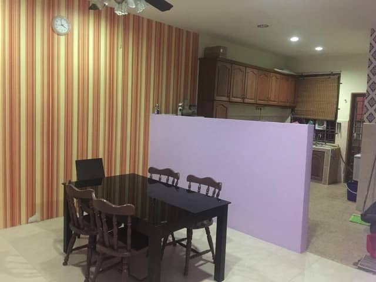
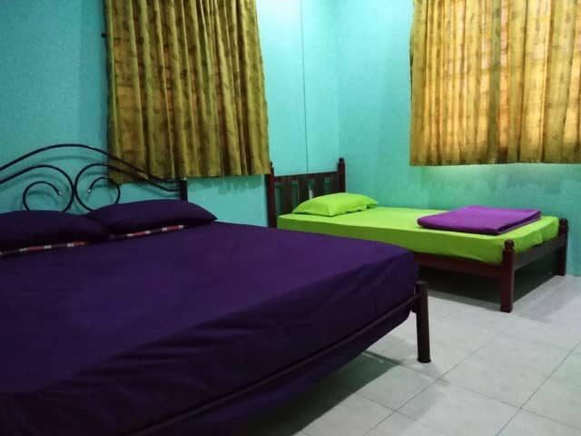
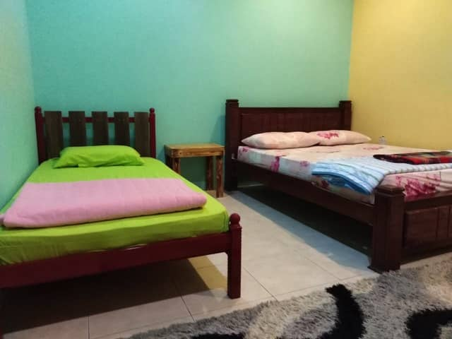

Bilik Tidur Utama
1 katil queen + 1 katil single, penghawa dingin, kipas siling dan bilik air sendiri.

Homestay Kemaman · Bandar Chukai · Terengganu
Homestay di Kemaman yang selesa, bersih & lengkap untuk keluarga anda
Homestay Chukai Utama ialah rumah semi-D lot tepi di Taman Pandan, Jalan Cukai Utama 2 — dalam bandar Chukai, pusat daerah Kemaman, Terengganu. Pasaraya Nirwana, bank, klinik, kedai makan dan Masjid Pengkalan Pandan semuanya berdekatan, jadi urusan harian mudah tanpa perlu memandu jauh.
Sesuai untuk percutian keluarga, tetamu majlis kenduri, waris yang menjaga pesakit di Hospital Kemaman, atau anda yang datang atas urusan kerja di sekitar Kemaman dan Kerteh.
1 katil queen + 1 katil single, penghawa dingin, kipas siling dan bilik air sendiri.
1 katil queen + 1 katil single, penghawa dingin dan kipas siling.
1 katil queen + 1 katil single dan kipas siling.
Set sofa dan TV dengan saluran Astro NJOI.
Meja makan 8 orang, dapur gas, peti sejuk, kelengkapan memasak, penapis air Cuckoo, mesin basuh dan seterika.
Rumah lot tepi dengan laman luas, kerusi rehat dan ampaian kain. Garaj muat sehingga 4 kereta.
Setiap bilik disediakan sejadah dan penyangkut baju.



Tetamu sering memuji lokasinya yang strategik dalam bandar — dekat masjid dan pasaraya — harga yang berpatutan, serta tuan rumah yang mesra dan prihatin.
Pernah menginap di sini? Ulasan jujur anda membantu keluarga lain memilih.Dari Kuala Lumpur: ikut Lebuhraya Karak dan LPT, keluar di Plaza Tol Chukai — kira-kira 3½ hingga 4 jam. Dari tol ke homestay lebih kurang 10 minit.
Dari Kuantan: sekitar 60 km (±1 jam). Dari Kerteh: sekitar 36 km (±40 minit). Dari Kuala Terengganu: sekitar 160 km (±2 jam 15 minit).
Di 15295 Taman Pandan, Jalan Cukai Utama 2, 24000 Chukai, Kemaman, Terengganu — di tengah bandar Chukai, berhampiran Pasaraya Nirwana dan Masjid Pengkalan Pandan.
Chukai (juga dieja Cukai) ialah bandar utama daerah Kemaman, Terengganu. Jika anda mencari homestay di Kemaman yang dekat dengan pekan, Homestay Chukai Utama terletak betul-betul dalam bandar Chukai.
3 bilik tidur. Setiap bilik ada 1 katil queen dan 1 katil single — jumlahnya 3 katil queen dan 3 katil single. Terdapat 2 bilik air, termasuk satu dalam bilik utama.
Penghawa dingin, TV Astro NJOI, set sofa, dapur gas dengan kelengkapan memasak, peti sejuk, penapis air Cuckoo, mesin basuh, seterika, meja makan 8 orang dan garaj yang luas.
Ada. Rumah lot tepi ini mempunyai garaj dan laman yang boleh memuatkan sehingga 4 buah kereta.
Lebih kurang 2 km ke Hospital Kemaman dan 5 km ke Pantai Monica Bay (Teluk Mak Nik). Pasaraya Nirwana, bank dan masjid hanya beberapa minit dari rumah.
Daftar masuk dari 3:00 petang dan daftar keluar sebelum 12:00 tengah hari.
Harga berpatutan dan berbeza mengikut musim. Hubungi kami terus melalui WhatsApp di 019-976 1693 untuk harga terkini dan tempahan.
Tempahan mudah — WhatsApp atau telefon terus ke 019-976 1693. Kami akan sahkan tarikh kekosongan dengan segera.